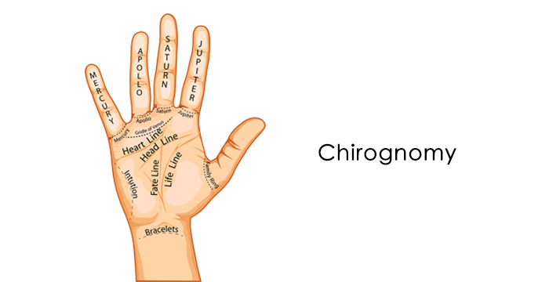
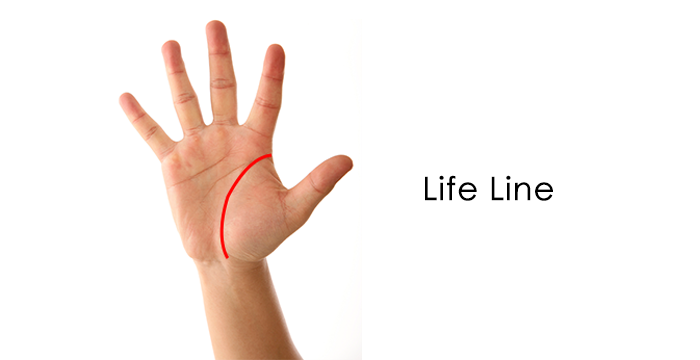
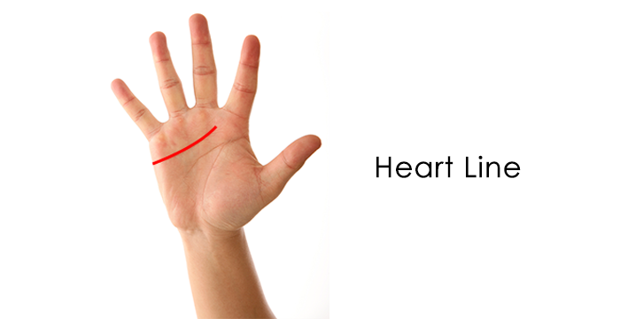
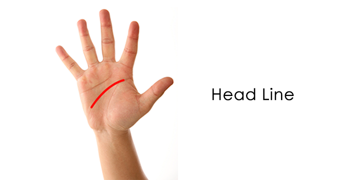

Palmistry reveals individual personality and character traits through the study of the shape, size and lines of the hands and fingers. There are two divisions within this ancient science. Chiromancy deals with the lines on the palm and chirognomy deals with the shape of the hands and the color, shape and texture of the palm, fingers and thumb.
The general consensus among most palm readers, with respect to what each hand indicates (right and left) is this — for right-handed individuals, the left hand lines and shapes indicate the character traits, personality and destiny one is born with. The right hand lines and shapes show the direction one’s life has taken. For left-handed individuals the opposite applies. However, depending upon the palm reader and his or her training or country of origin, this may vary.
Read Palms

The palm of the hand has three major lines — the life line, heart line and head line. The line on the palm that people are most curious about is the life line. This line begins between the index finger and the thumb and continues downward toward the base of the thumb and the connection to the wrist. The heart line, also known as the love line or mensal line, gives an indication about a person’s emotional state and their emotional and physical relationships with others. It can also be looked at as a predictor of the health of the heart. The head line, also known as the wisdom line (considered one of the most important lines in Chinese palmistry), reveals mental and psychological makeup and intellectual development and intuitive abilities.
Life Line
The line on the palm that people are most curious about is the life line. This line begins between the index finger and the thumb and continues downward toward the base of the thumb and the connection to the wrist. A common misconception about the life line is that it reveals how long you will live or when you will die. It does however, reveal information about the encounters in your life, relationships with others, health and physical and emotional well-being.

Long and deep line — Indicates good health, stamina, vitality and a well-balanced individual.
Short and deep line — Indicates the ability to overcome physical problems. It is a myth that a short life line signifies a short life. If the life line is short and shallow, it may signify that other people can easily influence or control you.
Deep line — Indicates a smoother life path.
Faint line — Indicates a person with low energy and having a less adventurous life.
Broken line — Indicates struggles, losses, unexpected change or interruption in your way of living, an accident or an illness. A break in the life line on one hand can signify that you may get ill and recover quickly. A break in the life line on both hands can signify that you may suffer a serious illness or disease. If there is a break near the wrist area in the line, it can indicate problems in early childhood.
Chained line — You are susceptible to health or emotional problems. You may also experience a life path that takes you in many directions.
Forked line — This type of line has various meanings depending on the fork placement on the hand. Generally, forks indicate an interruption, redirection or life change. It can sometimes mean that you are surrounded by scattered or split energies. If it leads to the Mount of Jupiter, it indicates success and recognition. If it forks to the Mount of Moon it indicates traveling to far off places.
Double or triple line — Indicates that you are surrounded by positive energies and you have great stamina. You might possibly be a twin or have found a true partner and soul mate, or you have someone watching over you. However, it may also mean that you are living a double life.
Absent line — Indicates a high-strung, anxious and nervous individual.
Branched line — Upward branches indicate achievement and success and downward branches indicate poor physical and emotional health, money problems, feelings of sadness and loss. Lines extending up and above the life line show an ability to recover from situations. Lines extending below the life line signify habitually wasting energy.
Other Marking s — For a description of other important markings on the palm, click on the picture below.
Heart Line
The heart line, also known as the love line or mensal line, gives an indication about a person’s emotional state and their emotional and physical relationships with others. It can also be looked at as a predictor of the health of the heart. This line is located above the head line and life line. It starts either under the index finger or middle finger, and extends toward the pinky finger.
This line is located above the head line and life line. It starts either under the index finger or middle finger, and extends toward the pinky finger. Some clues about love and relationships are revealed just by the position of the line on the palm. If the heart line begins underneath the index finger, it is an indication that you are satisfied with your love life, or it could mean that you are picky about who you choose to have a relationship with. If it begins underneath the middle finger, this can signify a self-centered approach to love, or you are consumed by the need to be loved. A line that starts between the middle and index fingers indicates that you are quick to give away your love. If the line crosses the fate line, it can indicate the possibility of a relationship loss.

Long — Indicates a person who is open and has an overall warmth. It can also indicate having a naïve belief that there are perfect relationships.
Very long — When the line touches both ends of the palm, it shows signs of co-dependency toward their partners (possible promiscuity).
Short — Indicates a highly self-centered individual, not outgoing.
Deep — Indicates a stressful life.
Deep and straight line — Indicates someone with feelings of jealousy, or having a tendency to disregard authority.
Straight — A more passive person in love relationships, or can signal someone who is void of emotion and or whose emotions are ruled by the brain.
Straight and Short — Indicates an individual not particularly concerned with romance.
Straight and Parallel to the head line — Indicates an emotionally stable individual.
Wavy — Represents many love relationships, or a lack of serious relationships.
Clear and Deep — Indicates sincerity, considerate and respectful, self-secure and at peace with their emotions.
Red and Darker — This type of line represents a temperamental approach to life, which can make you either easy-going or quick-tempered.
Red and Lighter — This type of line represents a more removed, stoic and cold emotional state.
Faint — Represents aloofness and places little importance on emotional life.
Broken — Indicates a person who is often stressed emotionally, can be subject to mood swings. And suffers from emotional trauma.
Chained — Indicates an individual who is easily hurt, has feelings of unhappiness, indecisiveness, or represents a time of depression in your life.
Double Forked — Indicates that your life combines romance with practicality and common sense.
Triple Forked — There is great balancing between your logical, physical and emotional sides.
Curved & nbsp; — Indicates a very physical and emotional, sensitive and intuitive individual. Can represent someone who expresses feelings easily.
Absent — Shows ruthlessness and a person who is ruled by logic and may have a disregard for others.
Without Branches — Indicates a lack in the ability of emotional growth.
Branched upward — Represents a strong interest in the opposite sex and has good and positive relationships.
Branched downward — Represents poor quality or unhappiness in relationships, subject to heartbreak.
Head Line
The head line, also known as the wisdom line (considered one of the most important lines in Chinese palmistry), reveals mental and psychological makeup and intellectual development and intuitive abilities. This line begins just above the life line, between the thumb and the index finger and runs across the palm toward the other edge of the palm horizontally. Sometimes the head line begins directly on the life line and extends out from there. This means that you have a strong will — mind over matter. Forked lines are sometimes called the writer’s fork or the lawyer’s fork.

Long — Indicates intelligence and a good memory. Represents an individual who thinks things through and does not overreact. They look at many possibilities before taking action.
Very long, extending across entire palm — Indicates a very successful individual and not the cowardly type. May have a tendency to be selfish.
Long and straight — Indicates a versatile, complex individual.
Straight — This indicates an individual who is realistic, down-to-earth, unimaginative, materialistic, logical, good organizational skills or a having great attention to detail.
Short — This indicates a practical and non-complex individual and someone who does not beat around the bush.
Deep — This denotes an excellent memory, concentration and a sensible nature.
Wavy — This signifies inner conflict with an individual’s practical and emotional sides. It can also indicate an individual who is untrustworthy, restless, unstable or has a short attention span.
Curved or sloping — Indicates a romantic and creative and idealistic individual who is open to new ideas and is not afraid to investigate concepts or beliefs. This person trusts his inklings and intuition.
Faint — This signifies and inability to concentrate or a lack of common sense, a daydreamer.
Broken — Indicates inconsistent thinking or nervousness and mental exhaustion.
Crosses — These indicate the vital and crucial decisions made in one’s life that can have a direct impact on your fate in your life.
Chained — This signifies an individual who is undergoing personal conflict, melancholy or confusion and can have a problem setting positive goals.
Forked — If the line ends with a strong fork, it is called a writer’s fork or lawyer’s fork. This person enjoys debate and can see both sides of an issue. This indicates great imagination and someone who uses his psychic powers and writing and speaking abilities throughout life.
Hooked — This indicates a self-centered, untrustworthy individual. If the hook is low in the palm, the individual can be miserly, selfish and cheap.
Branches — These signify events that are yet to come. They can also represent distractions that take an individual off his intellectual path.
Branched upward — Signifies positive outcomes and success in career, academics and creativity. Sometimes indicates having big dreams without being centered.
Branched downward — Signifies signs of struggle, possible depression, sorrow and distress and disappointments in certain points in life.
Absent — Extremely rare, but it can possibly indicate laziness, sluggishness, dullness or even detachment from reality.
Sister or Double — This can indicate increased brainpower. It can also represent a pleasant person or the direct opposite – a cruel person.